vignettes/tree_competition.rmd
tree_competition.rmdThis vignette describes the complete workflow for considering genetic
competition in tree breeding trials using gencomp. More
details about the theory underlying gencomp can be found at
Ferreira et al. (2023) and Chaves et al. (2025).
To begin, load gencomp using the code below. Note that
gencomp has a strong dependency on asreml,
which is a package that is not freely available. Thus, it is vital that
asreml is installed. The ggplot2 (Wickham 2016) library will also be loaded for
customizing the plots. This is not mandatory.
gencomp has two available datasets. The representative
for tree breeding is called euca, whose phenotypes were
simulated using parameters from a real data of an intermediate-stage
clonal eucalyptus trial. It has the mean annual increment values
(m3 ha-1 year-1, column
MAI) of a total of 100 clones (“C001” to “C100” in
clone column) laid out in a randomized complete block
design with 13 replicates (“B01” to “B13” in block column).
The experimental unit is the same as the observation unit, i.e., there
is a single plant per plot. The plants are spaced by 2 and 3 meters in
the row and column directions, respectively; and the position of each
tree in the field is found in columns row and col. Phenotypes of two
ages are available (“3y” and “6y” in age column). This
trial was not organized into contiguous blocks: the first six blocks
were situated in one area, while the other seven were in another. The
dataset includes a column labelled area, distinguishing
between these areas. We will use a single age to illustrate
gencomp’s pipeline:
| age | area | block | clone | tree | dist_row | dist_col | row | col | MAI |
|---|---|---|---|---|---|---|---|---|---|
| 6y | A1 | B02 | C015 | 104 | 2 | 3 | 40 | 4 | NA |
| 6y | A1 | B02 | C003 | 105 | 2 | 3 | 40 | 5 | 2.92 |
| 6y | A1 | B02 | C048 | 106 | 2 | 3 | 40 | 6 | 31.14 |
| 6y | A1 | B02 | C034 | 107 | 2 | 3 | 40 | 7 | 39.56 |
| 6y | A1 | B02 | C008 | 108 | 2 | 3 | 40 | 8 | 44.28 |
| 6y | A1 | B02 | C028 | 109 | 2 | 3 | 40 | 9 | 76.17 |
The competition matrix (or incidence matrix of competition effects),
henceforth depicted as
is indispensable for the analysis. In the case of tree breeding, due to
the large area occupied by a single tree and large spacing between
trees, the standard procedure is to compute the directional competition
intensity factors for each direction by filling the positions
corresponding to the candidates neighbouring a focal tree in the
respective row of
.
Currently, gencomp has three options for computing the
directional competition intensity factors:
MU)
The competition intensity factors are the inverse of the distance
between the focal individual and its neighbors in the diagonal, row and
column directions:where , and are the directional competition intensity factors for a given plot (i.e., a given row of ) in the row, column and diagonal directions, respectively; and are the distance between the focal individual and its neighbors in the row and column directions, respectively.
CC)
the distance and the number of neighbours in each direction are
considered. This method assumes that the distance between the focal
individual and its neighbours in the row is the same as the distance
between the focal individual and its neighbours in the column:where , and are the number of neighbors in the row, column and diagonal directions, respectively
SK)
considers the number of neighbors, the distance between the focal
individual and its neighbors and the difference between distances in the
row and column directions:where .
Once the direction competition intensity factors are estimated, the
mean competition intensity factor
(,
or CIF, in the function’s output) is obtained as
follows:
To build the
,
gencomp has the function prepfor. Here is how
to use it employing the example dataset:
comp_mat = prepfor(
data = dat,
gen = 'clone',
area = 'area',
plt = 'tree',
age = NULL,
row = 'row',
col = 'col',
dist.col = 3,
dist.row = 2,
trait = 'MAI',
method = 'SK',
n.dec = 3,
verbose = TRUE,
effs = c("block")
)data is the working dataset. gen,
row, col, and trait are the
column names in the dataset that contain the information of genotypes,
row, column, and trait, respectively. dist_row and
dist_col are the distances between rows and columns,
respectively. method refers to the method to be used to
compute the competition intensity: it should be "MU",
"CC" or "SK" (as detailed above).
area and age are NULL by default,
but if you have non-contiguous blocks (as we have in our example) and
multi-age (repeated measures) data (see
vignette("multi_age)"), you can add the name of the columns
that contain this information in the data frame. n.dec is
the number of decimal digits to show in
.
The plt argument is optional (defaulting to
NULL) and allows users to specify the name of the column
containing plot information. This helps ensure that the functions follow
the same order as the data collection in the field. If plt
is not provided, the function will automatically generate a column to
differentiate the plots, ordering the dataset by row and column. The
effs argument accepts a string vector with the names of
columns representing other effects to be considered in the model fitting
step. For instance, the effect of block (block). Finally,
verbose controls whether a progress bar is printed in the
console or not.
The prepfor function generates a list of class
comprepfor. This list has four elements:
| C001 | C002 | C003 | C004 | C005 | dist_row | dist_col | row | col | MAI |
|---|---|---|---|---|---|---|---|---|---|
| 0 | 0 | 0 | 0 | 0.48 | 2 | 3 | 29 | 4 | 46.02 |
| 0 | 0 | 0 | 0 | 0.50 | 2 | 3 | 29 | 5 | 54.07 |
| 0 | 0 | 0 | 0 | 0.32 | 2 | 3 | 29 | 6 | NA |
| 0 | 0 | 0 | 0 | 0.00 | 2 | 3 | 29 | 7 | 40.02 |
| 0 | 0 | 0 | 0 | 0.00 | 2 | 3 | 29 | 8 | 76.32 |
head(comp_mat$neigh_check) | gen | row | col | y_focal | y_row | n_row | y_col | n_col | y_diag | n_diag | y_neigh |
|---|---|---|---|---|---|---|---|---|---|---|
| C070 | 29 | 4 | 46.02 | 54.07 | 1 | NaN | 0 | 1.74 | 1 | 27.91 |
| C071 | 29 | 5 | 54.07 | 46.02 | 1 | 1.74 | 1 | 22.79 | 1 | 23.52 |
| C090 | 29 | 6 | NA | 47.04 | 2 | 22.79 | 1 | 12.16 | 2 | 28.24 |
| C096 | 29 | 7 | 40.02 | 76.32 | 1 | 22.57 | 1 | 34.69 | 2 | 42.07 |
| C083 | 29 | 8 | 76.32 | 40.02 | 1 | 46.60 | 1 | 22.57 | 1 | 36.40 |
| C060 | 29 | 9 | NA | 51.18 | 2 | NaN | 0 | 46.60 | 1 | 49.65 |
comp_mat$Z[1:5, 1:5]| C001 | C002 | C003 | C004 | C005 |
|---|---|---|---|---|
| 0 | 0 | 0 | 0 | 0.48 |
| 0 | 0 | 0 | 0 | 0.50 |
| 0 | 0 | 0 | 0 | 0.32 |
| 0 | 0 | 0 | 0 | 0.00 |
| 0 | 0 | 0 | 0 | 0.00 |
comp_mat$CIF
#> [1] 2.291523comprepfor objects are compatible with the S3 method
plot, which can be used to generate a heatmap illustrating
the field trial, and box-plots with each candidate’s performance.
plot(comp_mat, category = "heatmap")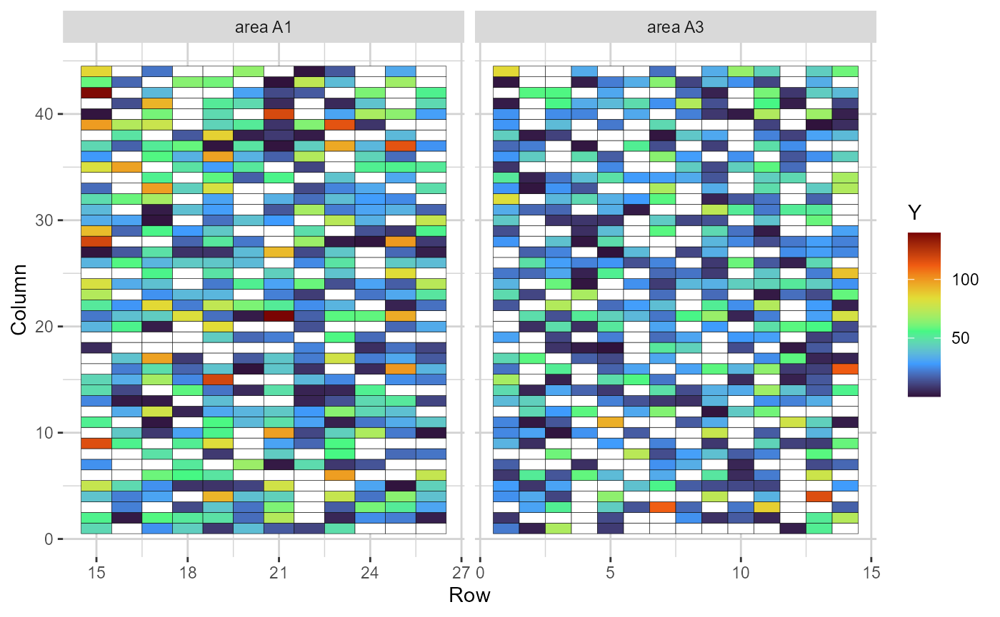
Heatmap representing the grid, in which the cells are filled according to the phenotype value of each plot (blank cells are missing values)
plot(comp_mat, category = "boxplot") + theme(axis.text.x = element_blank())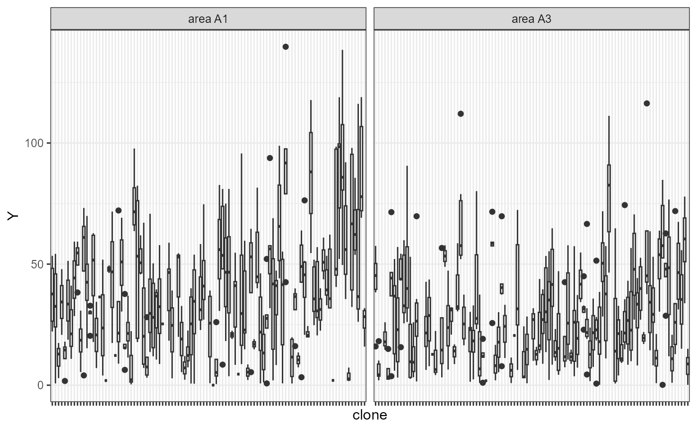
Boxplots depicting the phenotypic performance (y-axis) of each selection candidate (x-axis). The candidates’ names were removed for better visualization
The summary(comprepfor) function returns the number of
phenotypic records, number of selection candidates, number of rows and
columns, and the number of ages (if applicable) and areas (if
applicable).
summary(comp_mat)
#> MAI clone row col age area
#> 1 1144 100 26 44 0 2A general spatial-genetic competition model can be represented by:
where
is the vector of phenotypic records,
is the vector of fixed effects,
is the vector of direct genetic effects (DGE),
is the vector of indirect genetic effects (IGE),
is the vector of other random effects, and
is the vector of spatially correlated errors.
is the incidence matrix of the fixed effects,
is the DGE incidence matrix,
is the IGE incidence matrix (built using prepfor), and
is the design matrix of other random effects. The dimensions of
are the same as
.
The spatially correlated errors are distributed as
,
where
is the spatially correlated residual variance,
and
are the first-order autoregressive correlation matrices in the column
and row directions, and
is the Kronecker product. If area is not NULL
(like in the example), heterogeneous residual variances and particular
autocorrelations are obtained per area. If cor = TRUE
(default, see below), the function will fit a model in which
and
are correlated outcomes of the genotypic effects decomposition. They
both follow a Gaussian distribution, with mean centred in zero, and
covariance given by:
where is the DGE variance, is the IGE variance, and is the covariance between DGE and IGE. An alternative parametrization considers that and are independent. If this is not true for the trait and/or population under investigation, assuming independence will add bias to the results.
The function that fits the genetic-competition linear mixed model
uses the average information algorithm implemented in the
asreml package (The VSNi Team
2023). Check the function’s structure using the example
dataset:
model = asr(
prep.out = comp_mat,
fixed = MAI ~ 1,
random = ~ block,
lrtest = TRUE,
spatial = TRUE,
cor = TRUE
)prep.out is a comprepfor object.
fixed is a formula, declared just like is usually done for
regular asreml models. random is also a
formula, but this argument should just be altered if other random
effects than the genotypic effects should be considered in the model.
This is because all pre-programmed models already consider DGE and IGE,
as previously described. In our example, we added the block
effect, which was declared in the effs argument of
comprepfor. lrtest defines if hypothesis tests
using likelihood ratio tests should be done. spatial
determines if a regular genetic competition model
(spatial = FALSE) or a spatial-genetic competition model
(spatial = TRUE) should be fitted. Finally,
cor dictates if the function will fit a model considering
the covariance between DGE and IGE (cor = TRUE) or not
(cor = FALSE). asr can receive other arguments
passed on to the asreml function (see ?asreml
for more information). The output of the asr function is an
object of classes asreml and compmod. Since it
holds the asreml class, it is suitable for using with S3
methods like plot, summary,
predict, update, resid and others
(see help("asreml.object")).
The function to obtain the main results from the compmod
object is called resp, and its structure is exemplified
below using the example dataset:
res = resp(
prep.out = comp_mat,
model = model,
weight.tgv = FALSE,
sd.class = 1
)model is the compmod object obtained from
the asr function. weight.tgv receives a
logical value, and determines if the reliability should be used as
weight to compute the total genotypic value (TGV) or not.
sd.class is a weight to multiply the standard deviation of
competition effects when determining the competition classes (defaults
to 1). The resp function returns an object (list) of
classes comresp and comprepfor. This object is
compatible with the S3 methods plot, print and
summary. A detailed description of the results within the
list generated by res is provided below.
The data frame with the variance components will yield different
results depending on the model. cor(IGE_DGE), which
represents the correlation between DGE and IGE; DGE and
IGE will always be present in variance component obtained
from compmod objects. The residuals will have different
forms depending if area and age are
NULL or not in the prepfor function, and if
spatial is TRUE or FALSE in the
asr function.
res$varcomp| component | std.error | z.ratio | bound | %ch | |
|---|---|---|---|---|---|
| block | 26.1337 | 12.9333 | 2.0207 | P | 0.0 |
| cor(IGE_DGE) | -0.7627 | 0.1350 | -5.6514 | U | 0.0 |
| DGE | 215.2442 | 38.1272 | 5.6454 | P | 0.0 |
| IGE | 23.0976 | 7.3133 | 3.1583 | P | 0.0 |
| R=area_A1 | 437.7093 | 36.9198 | 11.8557 | P | 0.0 |
| R=autocor(row):area_A1 | 0.0054 | 0.0720 | 0.0744 | U | 0.9 |
| R=autocor(col):area_A1 | -0.2037 | 0.0669 | -3.0445 | U | 0.0 |
| R=area_A3 | 247.9184 | 20.9541 | 11.8315 | P | 0.0 |
| R=autocor(row):area_A3 | 0.0043 | 0.0810 | 0.0525 | U | 0.1 |
| R=autocor(col):area_A3 | 0.1057 | 0.0745 | 1.4202 | U | 0.0 |
Available only if lrt = TRUE in the asr
function.
res$lrt| effect | LR-statistic | Pr(Chisq) |
|---|---|---|
| DGE | 217.03194 | 0.0e+00 |
| IGE | 18.29996 | 9.4e-06 |
Available if cor = TRUE in the function
asr. Contain the DGE heritability and total heritability
Bijma, Muir, and Van Arendonk (2007). The
first is the portion of the total variance that refers to the DGE. The
latter is a ratio between the sum of the total heritable components
against the phenotypic variance, and it is an adjusted estimate of the
heritability that considers the competition effects and the covariance
between DGE and IGE. The expressions for these heritabilities are given
below:
with being the total phenotypic variance.
res$heritability| H2direct | H2total | |
|---|---|---|
| area_A1 | 0.307 | 0.128 |
| area_A3 | 0.420 | 0.176 |
Since area is not NULL in our example, and
the model estimates heterogeneous residual variances, the heritabilities
are particularized per area.
When genetic competition effects are statistically significant, the most appropriate selection unit is the TGV, given by:
where
and
are the DGE and IGE of the
candidate, respectively. If weight.tgv = TRUE in the
resp function, the weighted TGV is computed as follows:
with and being the reliabilities of DGE and IGE, respectively.
The comresp object has a data frame containing the DGE
and IGE, their standard errors, the competition class of each genotype
and the TGV. If other random effects were declared in the model, there
will be a further data frame with their BLUPs.
head(res$blups$main)| clone | DGE | se.DGE | rel.DGE | IGE | se.IGE | rel.IGE | class | TGV |
|---|---|---|---|---|---|---|---|---|
| C099 | 31.455 | 5.207 | 0.874 | -5.103 | 2.865 | 0.645 | Aggressive | 19.762 |
| C075 | 48.379 | 4.940 | 0.887 | -13.052 | 2.888 | 0.639 | Aggressive | 18.471 |
| C087 | 15.902 | 6.106 | 0.827 | -0.720 | 2.941 | 0.626 | Homeostatic | 14.252 |
| C092 | 31.636 | 5.355 | 0.867 | -8.234 | 2.972 | 0.618 | Aggressive | 12.768 |
| C028 | 27.489 | 4.993 | 0.884 | -6.662 | 2.954 | 0.622 | Aggressive | 12.224 |
| C073 | 17.529 | 5.222 | 0.873 | -2.358 | 2.809 | 0.658 | Homeostatic | 12.125 |
From this data frame, several information can be extracted. Check out below.
The higher the IGE, the more aggressive is the genotype. Here, we use a modified version of the classification proposed by Ferreira et al. (2023) to define competition classes:
with being the mean IGE in the population, the IGE of the genotype, the IGE’s standard deviation, and a weight defining the thresholds to declare if a genotype is aggressive, homoeostatic or sensitive.
This classification is illustrated using a density plot, a scatter plot and a heat map representing the field grid. These plots aid in the investigation of the relationship between DGE and IGE, how this dynamics are related to classification, and how aggressive, homoeostatic and sensitive are distributed in the field.
plot(res, category = "class")
Density of IGE values. The area within the distribution is filled according to the competition class
plot(res, category = "DGEvIGE")
Relationship between IGE (x-axis) and DGE (y-axis). The dots are coloured according to the competition class.
plot(res, category = "grid.class")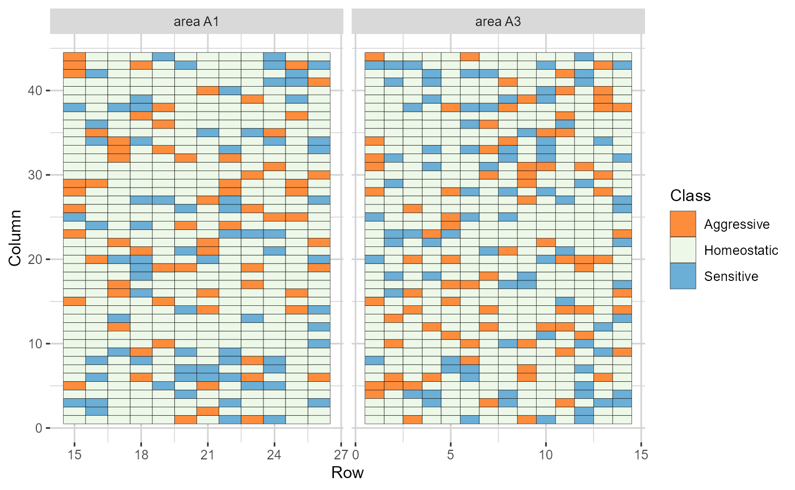
Heatmap representations of the field trial, with cells filled according to the competition class of each genotype
Three possible rankings are possible: based on the DGE, the IGE, or the TGV. Note that DGE and IGE have different reliabilities, with DGE’s being usually higher. It is advisable to take this into consideration when making decisions.
plot(res, category = "DGE.IGE") +
theme(axis.text.x = element_text(size = 4, vjust = .5, hjust = 1))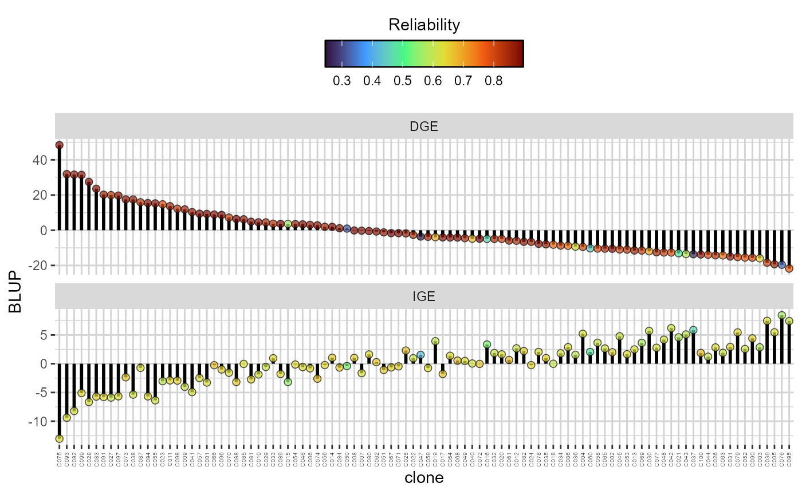
Direct (DGE) and indirect (IGE) genotypic effects ( extit{y}-axis) of each candidate. The plots are in descending order according to the DGE. The colour of the dots reflects the reliability of both the DGE and IGE for each genotype
plot(res, category = "TGV") +
theme(axis.text.x = element_text(size = 4, vjust = .5, hjust = 1))
Total genotypic value (TGV) (y-axis) of each candidate (x-axis), in increasing order
The distribution of high-performance and/or competitive candidates is also illustrated.
plot(res, category = "grid.dge")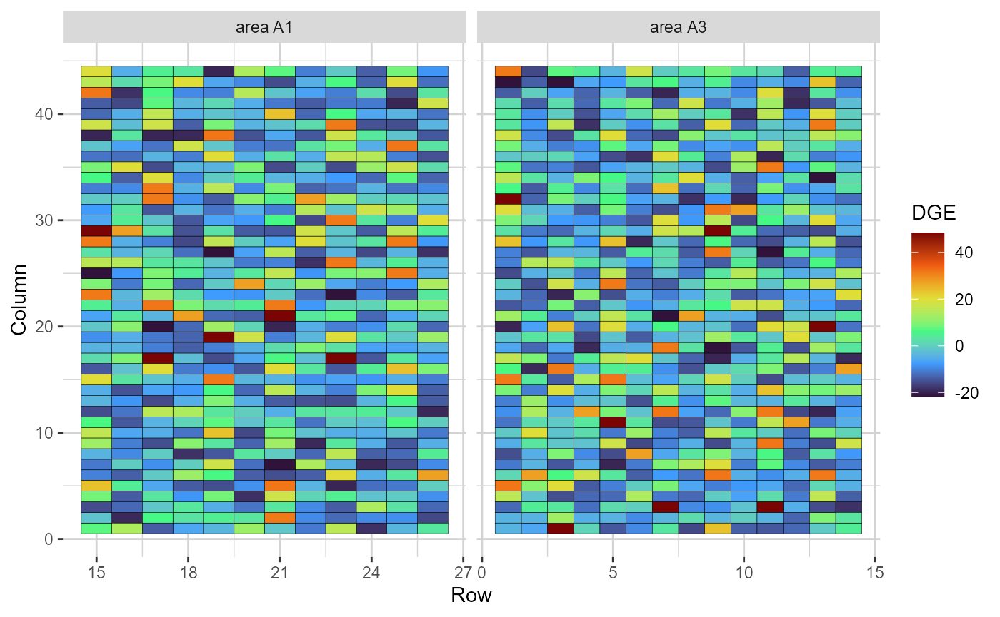
Heatmap representations of the field trial, with cells filled according to the direct genotypic effect (DGE) of each genotype
plot(res, category = "grid.ige")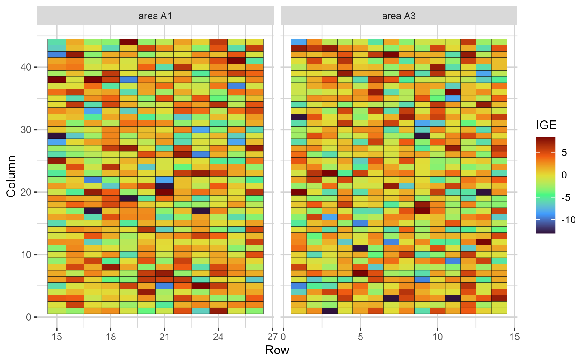
Heatmap representations of the field trial, with cells filled according to the indirect genotypic effect (IGE) of each genotype
The number of different genotypes as neighbours of the candidates can be evaluated by the figure below. In the example dataset, almost all clones neighboured each other, and most of them had homoeostatic neighbours.
plot(res, category = "nneigh")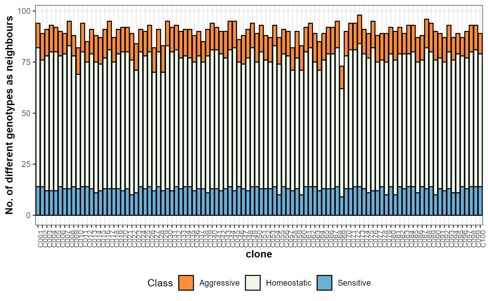
Number of different genotypes as neighbors (total and per competition class) of each selection candidate
The last plot available for objects of class compresp is
a heatmap coloured according to the residual value of each plot. This is
useful to observe possible trends in the field.
plot(res, category = "grid.res")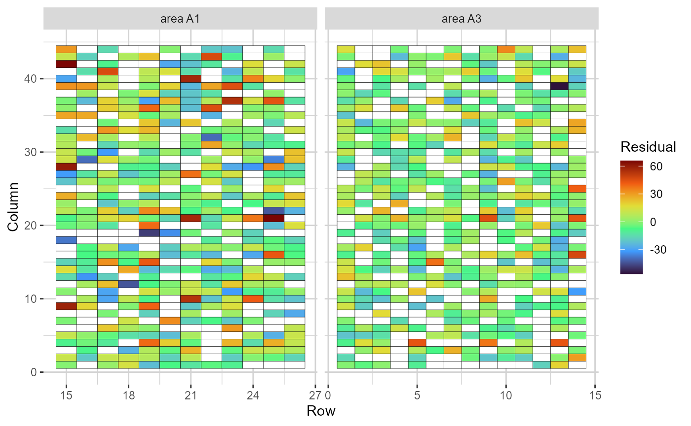
Heatmap representations of the field trial, with cells filled according to the residual value of each plot. Blank cells are missing values
For tree breeding only, we implemented a function that simulates a grid considering DGE and IGE of a set of clones(Ferreira et al. 2023). They are positioned differently in each simulation, which enables the modification of focal tree-neighbour dynamics. In each simulation, the expected mean of each clone is predicted using the following equation:
where is the DGE of the focal individual , and is the IGE of the neighbour ( can have up to neighbors). In addition, one may want to weigh the IGE by the distance between the focal individual and neighbor (). In this case, the equation is:
The composite function will need every piece of
information obtained up to now (provided by functions
prepfor, asr and resp). Here is
the function’s structure, using the example dataset:
cc = composite(
prep.out = comp_mat,
model = model,
resp.out = res,
d.row.col = c(3, 3),
d.weight = TRUE,
nsim = 10,
verbose = TRUE,
selected = res$blups$main[order(res$blups$main$TGV, decreasing = T), 1][1:10]
)
#>
#> The means were predicted considering an area of 9 haprep.out, model and resp.out
receive objects of class comprepfor, compmod
and comresp, respectively. d.row.col is a
vector of size two, where the first element is the distance between rows
and the second the distance between columns of the simulated
grid. selected is a vector with the names of the
clones selected to compose the clonal mixture. nsim is the
number of grid simulations, i.e., how many field grids will be
generated. When nsim > 1 (defaults to 10), the function
will estimate the 95% confidence interval of the predicted means using a
bootstrap process. d.weight receives a logical value. If
d.weight = TRUE (default), the IGE is divided by the
distance between the focal tree and its neighbours when the expected
mean is estimated. Different clonal mixtures can be tested by declaring
different clones in the selected argument. This can be
easily done using a loop. In the example, we are using the top ten
clones based on the TGV. Here is the result:
| y.pred | CI_0.05 | CI_0.95 | |
|---|---|---|---|
| C023 | 34.031 | 33.988 | 34.072 |
| C028 | 46.789 | 46.720 | 46.860 |
| C066 | 42.901 | 42.857 | 42.945 |
| C073 | 51.263 | 51.207 | 51.316 |
| C075 | 67.706 | 67.652 | 67.762 |
| C083 | 50.887 | 50.820 | 50.948 |
| C087 | 36.772 | 36.725 | 36.824 |
| C092 | 28.235 | 28.175 | 28.292 |
| C093 | 35.264 | 35.207 | 35.329 |
| C099 | 50.716 | 50.672 | 50.756 |
The predicted mean of this clonal mixture was 44.46.